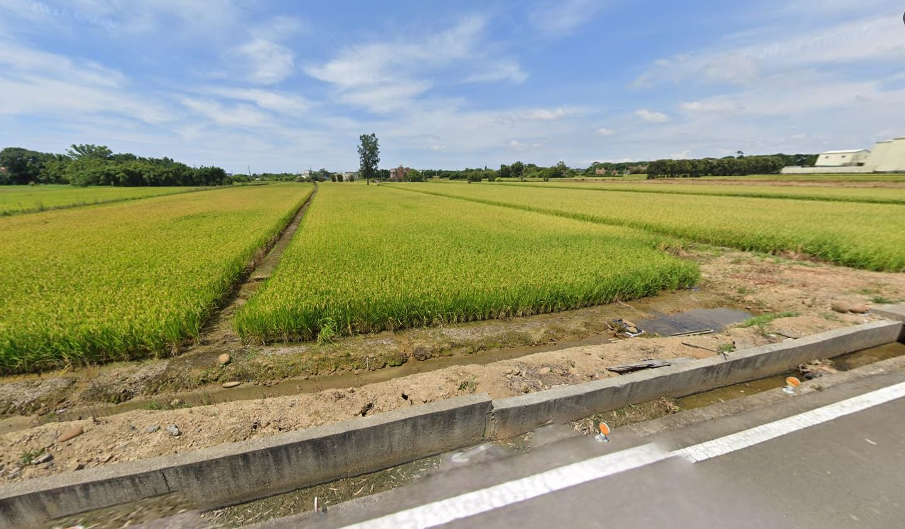

1 / 3房屋亮點
- 土地方正
- 地勢平坦
- 有排水溝
- 面寬約19.6米
土地資料
- 型態
- 農地
- 使用分區
- 特定農業區
- 臨路
- 約 2 米
- 座向
- 座東北朝西南
- 位置
- 桃園市觀音區近向陽農場
坪數說明
- 土地面積
- 605 坪
- 單價
- 1.6 萬/坪
屋況特色
605 坪方正農地，面寬約 19.6 米、深度約 96 米，地勢平坦，好規劃、利用率高。
旁邊有排水溝，排水好、不容易積水。
- 特定農業區，適合自用耕作或置產
- 離觀音區向陽農場很近
買這塊地，錢要怎麼準備？
自備款（依銀行評估）約 488 萬
銀行評估可貸約 480 萬
銀行貸款評估
- 蘆竹農會：可貸約 480 萬
農地貸款的成數、利率和年限依農會或銀行核定，雜費另計。